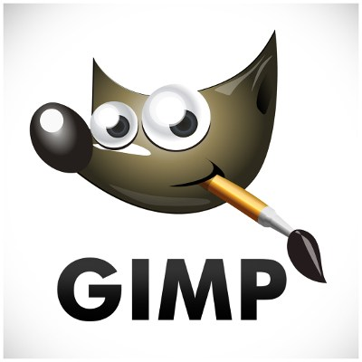
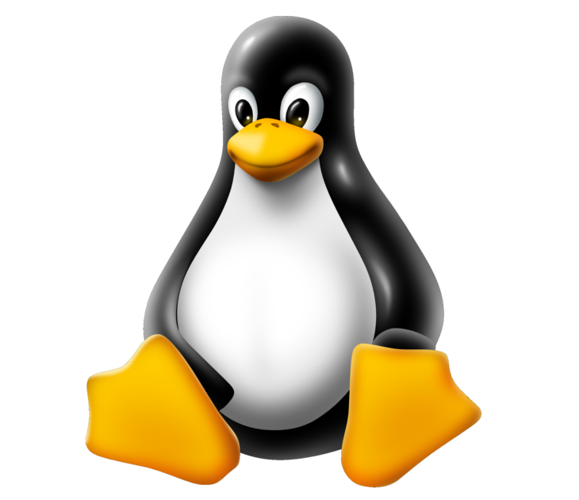
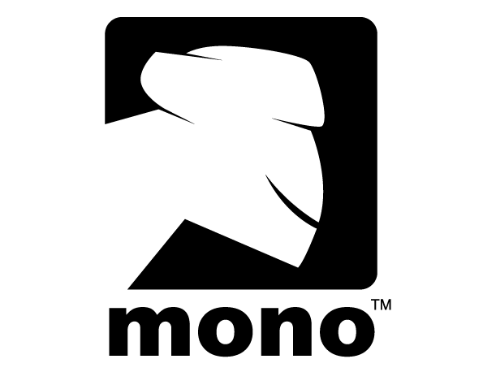
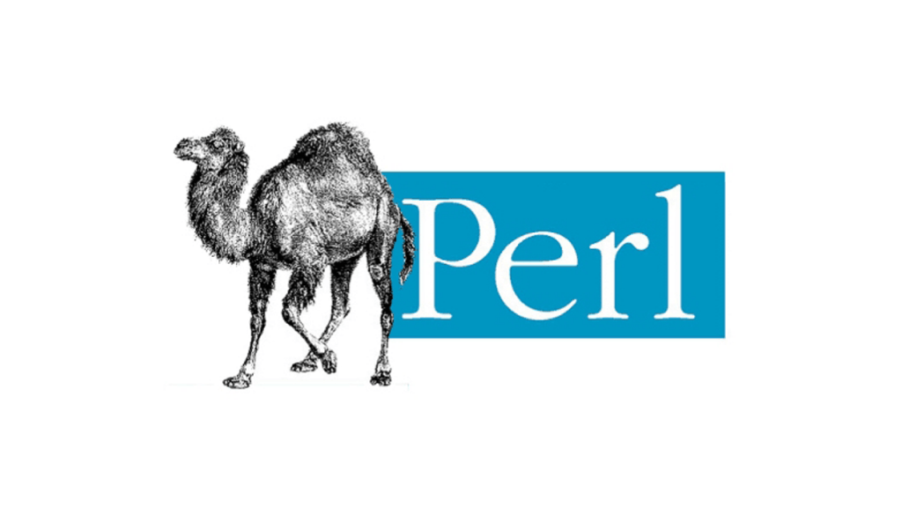
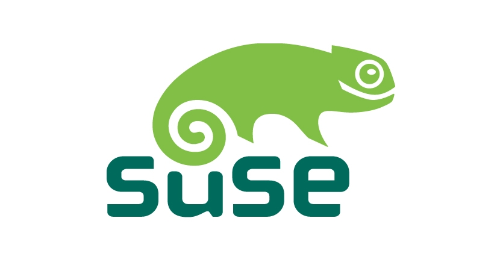

(http://es.wikipedia.org/wikiGeek)
que se podria traducir al castellano como friki.
La definicion de Software Libre estipula los criterios que se tienen que cumplir para que un programa sea considerado libre.
De vez en cuando modificamos esta definicion para clasificarla o para resolver problemas sobre cuestiones delicadas
Mas abajo en esta pagina, la sección Historial, se puede consultar la lista de modificaciones que afectan la definición de software libre.
‘‘Software Libre’’ es el software que respeta la libertad de los usuarios y la comunidad. En grandes lineas, significa que los usuarios tienen la libertad para ejecutar, copiar, distribuir, estudiar, modificar y mejorar el software. Es decir, el ‘‘Software Libre’’ es una cuestion de libertad, no de precio. Para entender el concepto, piense en ‘‘libre’’ como en ‘‘libre expresión’’, no como en barra libre.
Promovemos libertades estas libertades por que todos merecen tenerlas. Con estas libertades, los usuarios (tanto individualmente como en forma colectiva) controlan el programa y lo que este hace. Cuando los usuarios no controlan el programa decimos que dicho programa "no es libre", o que es "privativo". Un programa que no es libre controla a los usuarios, y el programa controla el programa, con lo cual el programa resulta ser un instrumento de poder injusto.
Un programa es software libre si los usuarios tienen las cuatro libertades esenciales:La libertad de redistribuir copias para ayudar a su projimo (libertad 2)
La libertad para distribuir (libertad 2 y 3) significa que usted tiene la libertad para redistribuir copias con o sin modificaciones, ya sea gratuitamente o cobrando una tarifa por la distribución, a cualquiera en cualquier parte. Ser libre de hacer eso significa, entre otras cosas, que no tiene debe que pedir ni pagar ningún permiso para hacerlo.
| Ñu | Un Ñu es el animal representativo del proyecto GNU ya que GNU significa ‘‘Ñu’’ en el ingles. El nombre GNU no se adoptó porque a la persona que comenzo el proyecto (Richard Stallman) le gustase particularmente este animal sino por que GNU es un acrónimo recursivo que quiere decir ‘‘GNU's Not Unix.’’ |
| Gimp  | Wilber es la mascota de GIMP (GNU Image Manipulation Program) fue creada en 1997 por Thomas Knosmanen y Wilber es un... gimp. A menudo se confunde con un zorro o un raton pero según su creador, Wilber es simplemente un gimp. |
| Tux  | La idea de Tux surgió del propio Linux Torvalds; según cuenta, de pequeño le mordio un pinguino en Australia y desde entonces le pareció un animal simpático. No hay un origen claro del nombre ‘‘Tux’’; algunos dicen que proviene del ingles Tuxedo que significa esmoquín (siempre se ha dicho que los pinguinos van de esmoquín) y otros dicen que el nombre es una mezcla de Torvald con Unix. |
| Mono  | Mono es tanto el nombre como el animal representativo como un proyecto que pretende ser una implementación libre de la plataforma .Net. |
| Perl | El camello es la imagen del lenguaje Perl desde que apreciese por primera vez en el libro ‘‘Programming Perl’’, curiosamente, el camello de Perl tiene derechos de autor (la editorial O’Reilly). |
| Mysql | El delfín que es parte del logo de MySql se llama Sakila. Según los creadores de MySql, este delfín representa los valores de la compañía y de la base de datos: rapidez, precisíon, potencia y naturalidad. |
| Suse  | Greeko; así se llama el simpaticó camaleón que es la mascota de la compañia alemana Suse. El nombre fue elegido tras un concurso en el que participaron miles de personas y proviene del termino Geek (http://es.wikipedia.org/wikiGeek) que se podria traducir al castellano como friki. |
Software libre la comunidad hacia el conocimiento Seguir Leyendo...
Linux